History of Sonic: Lock & Load
Sonic: Lock & Load is turning 4 years old in February 2024, so I decided I'd write a bit about its history!
Pre-v0.1
Sonic: Lock & Load started life as Sonic the Hedgehog in DOOM (or simply Sonic Doom) in 2019.
I decided to make Sonic the Hedgehog in DOOM after watching a Peter Knetter video about Sonic being put in TLoZ: Ocarina of Time.
After having a good old ha at the video several times over, I thought to myself, "hey, it would be really funny if I put Sonic in DOOM, I mean, I recently got into classic DOOM and would love to experiment with modding!"
And so, I gathered together some Sonic 3 sprites, some Sonic Unleashed sound effects (fun fact, those assets are still in Sonic: Lock & Load today), a copy of SLADE and GZDoom, and the latest edition of the ZDoom Wiki, and got to work.
I never intended for this project to become so big, or even for it to become something for other people to play. It was just something I wanted to make to test and entertain myself.
v0.1 - (2020-02-12)
Sonic the Hedgehog in DOOM v0.1 was the first release of the mod that was published to GitHub. It wasn't the first ever release of the mod, but it's the first release that's on file - the older versions have been lost to time.
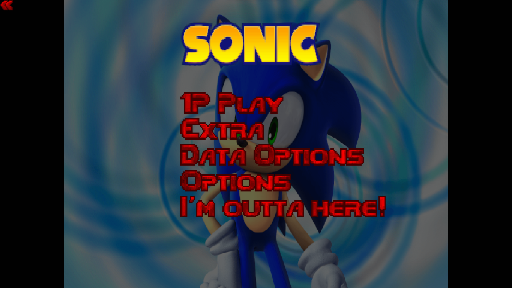v0.1 was incredibly simple – it replaced Doomguy with a front-facing Sonic head, and made all the weapons really fast, with the fist being made the default weapon, and the chainsaw being effectively removed.
At the time, I only owned The Ultimate DOOM, not DOOM II, so StHiD v0.1 was only available for DOOM 1. Furthermore, it was quite a bit incomplete even if you were using DOOM 1.
The plasma rifle and BFG-9000 weren't replaced or removed, which was especially strange, since Sonic's slot 2 weapon was the Chaos Blaster, meaning he would have two plasma rifles if the player entered the IDKFA cheat code.
v0.2 - (2020-03-20)
Version v0.2 added minor tweaks and improvements.
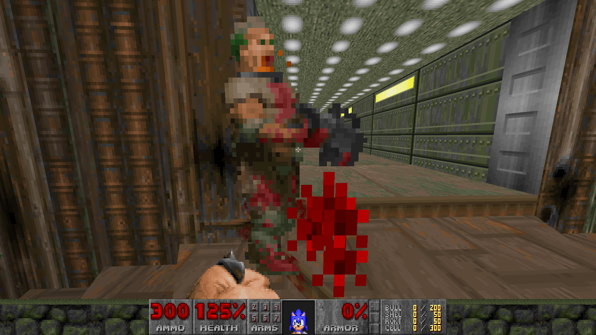v0.2 replaced the rapid punching fist with the Boost/Drift, a fist that allowed Sonic to perform the Boost and Drift techniques using the left and right mouse buttons respectively. v0.3 removed the fist entirely and replaced it with a blue aura, like in the Sonic games.
There isn't much here, since I had no sense of what to include in updates back then.
v0.3 - (2020-04-09)
In addition to replacing the fist with an aura, v0.3 gave the game a new HUD and added a shiny new tutorial level, which taught you how to use Boost and Drift.
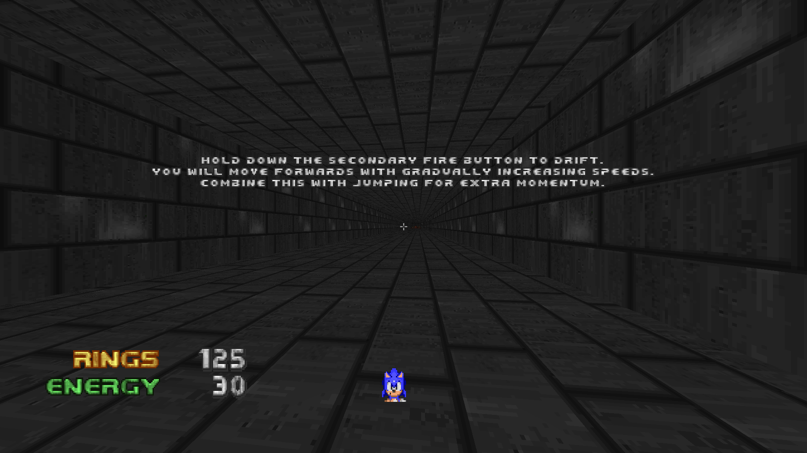v0.4 (2020-04-22)
v0.4 added some more involved changes, adding the level time to the HUD and having a couple of music replacements here and there.
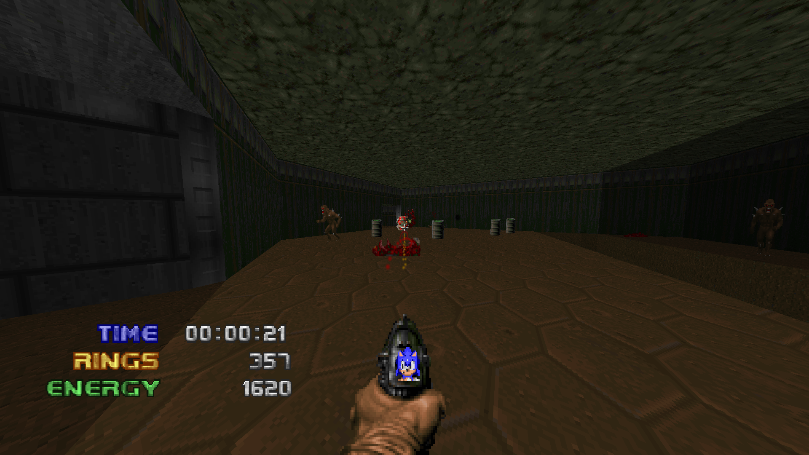Sonic also got a new weapon in the form of the Speedforce Pistol, a railgun pistol thingy which uses a lot less Chaos Energy but is a lot weaker.
v0.4 also made DOOM II properly compatible and removed the unused weapon slots.
It also uncapped the Chaos Energy limit to 9999, for some reason, which wasn't reverted for a little while.
v0.5 (2020-04-29)
v0.5, named the "Knight of the Wind" update, was the first version of Sonic the Hedgehog in DOOM to feature a name.
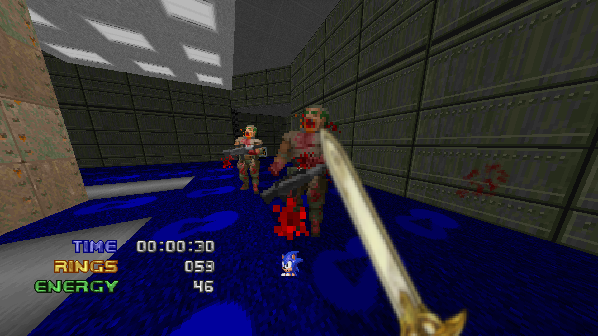Other than that, it wasn't much different from the solid update that was v0.4 in terms of gameplay, though it did feature a new melee weapon, Caliburn, the sword from Sonic and the Black Knight. Which non-coincidentally is where I got the name of the update from.
Caliburn was capable of performing the "Soul Surge", a massive-range hitscan attack that instantly ended any enemies Sonic was facing.
It did include your garden-variety bug fixes, and minor improvements, of course – but otherwise it wasn't much different from what came before.
v0.6 (2020-05-11)
v0.6 was named the "Eclipse" update, and replaced the Chaos Blaster with the Eclipse Blaster, which functioned the same, but with an alt-fire that restores Sonic's rings.
It's also the first ever version to use a unique title screen.
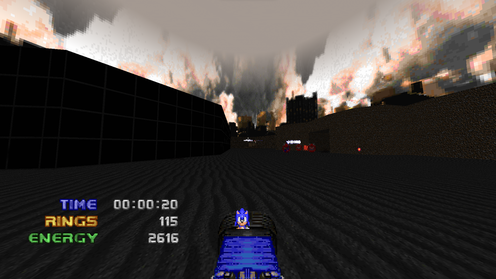There was also quite a lot of minor improvements and bug fixes. Otherwise, it was pretty similar to v0.4 and v0.5.
v0.7 (2020-05-25)
v0.7, named the "Ascension" update, made some more surface-level changes, slightly breaking away from v0.4.
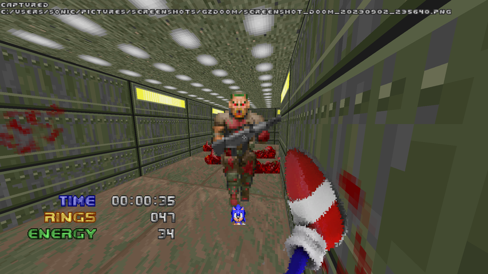Boost/Drift was gone, and replaced with just the Boost, which works much more similar to how it does in Sonic Unleashed.
With the immediate rush of the v0.2 Boost gone, I decided to make the unarmed primary fire a kick attack. Simply a kick, with no other qualities.
DOOM II's intermission text screens were replaced with Sonic's dialogue, and styled to look more like Sonic Adventure 2's recap screens, to push the whole "Sonic in DOOM" thing further.
v0.8 (2020-06-08)
Now, this? This is where it starts getting good!
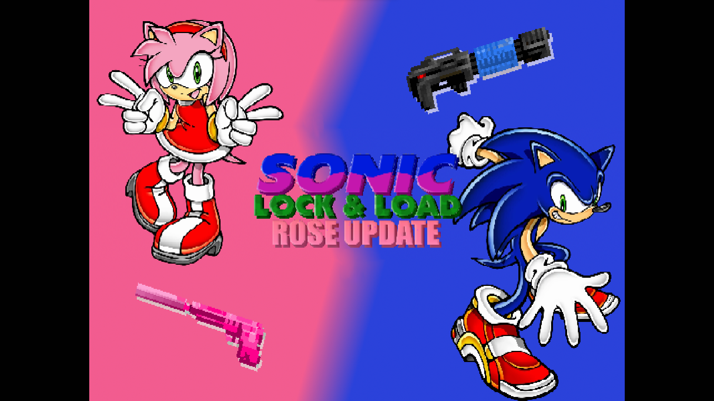This is where the name "Sonic: Lock & Load" started.
I did this so that "Sonic the Hedgehog in DOOM" wouldn't be confused with the much older and much more well-known fan game Sonic Robo Blast 2, which is regarded as "Sonic DOOM", being built on a modified version of the Doom Legacy source port.
But furthermore, v0.8 is called the "Rose Update". Why? Because it added Amy Rose, of course!
Amy came with her own host of weapons, that were more suited for playing carefully and sneakily.
Why Amy, and not Tails? Sometimes I even ask that myself. I guess I really liked Amy?
v0.8 also removed the tutorial that had been in Sonic: Lock & Load since v0.3, and it wouldn't be re-added for another while before being re-removed.
It also featured a single-level "campaign". . .but, uh, I don't like to talk about that one.
This was also when the 9999 Chaos Energy limit was lowered to the much more reasonable 999.
Additionally, Sonic received longer quills, looking more like he does in Sonic '06, probably.
It was evident by this point that I was getting more confident in Sonic: Lock & Load as a game to be played by other people, rather than an experimental project to be played by me and only me.
v0.9 (2020-07-17)
Already feeling the high of the major update that was v0.8, I decided that v0.9, named the "Dark Update", would be the update to add Shadow the Hedgehog.
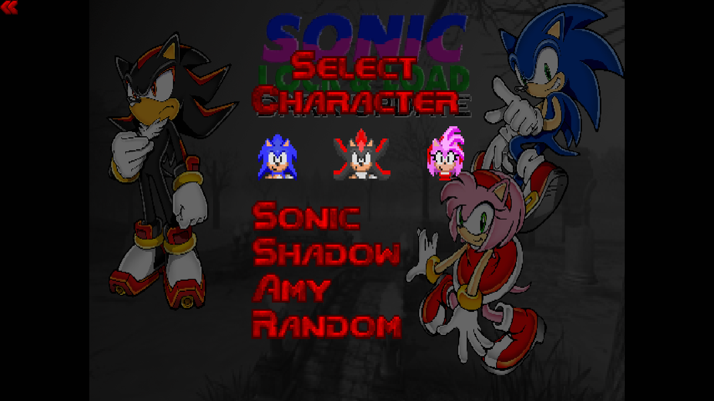Admittedly, v0.9 didn't really focus much on fleshing out Shadow as a playable character. He was pretty much Sonic, but he wasted energy a lot faster.
Sonic and Amy controlled the exact same they did in v0.7 and v0.8 respectively, with minor adjustments and refinements.
Out of the pre-Chaos Update versions, v0.9 was the most refined and polished, which, that much is obvious.
v0.9 was the final update of Sonic: Lock & Load for a while, while I started work on the biggest update yet. . .
v1.0 (2021-11-21)
v1.0 of Sonic: Lock & Load, named the "Chaos Update", was originally supposed to add a better system for Super form transformations.
Of course, if you look at the 17-month-long gap between Dark and Chaos, it's pretty evident that it was anything but a simple update.
This? This was the next level.
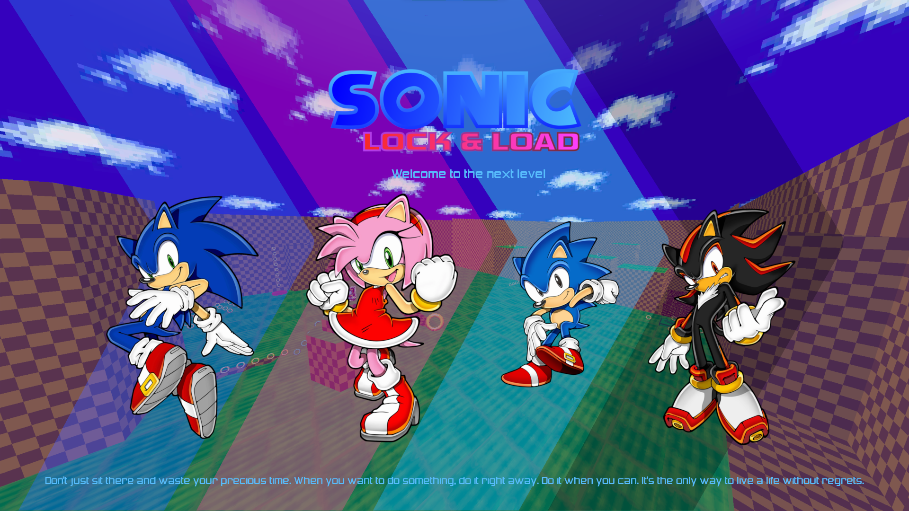v1.0 was a massive turning point for Sonic: Lock & Load, even more so than v0.4 was.
Gone were the days of S:L&L being a simple gameplay mod - no, now it had its own levels!
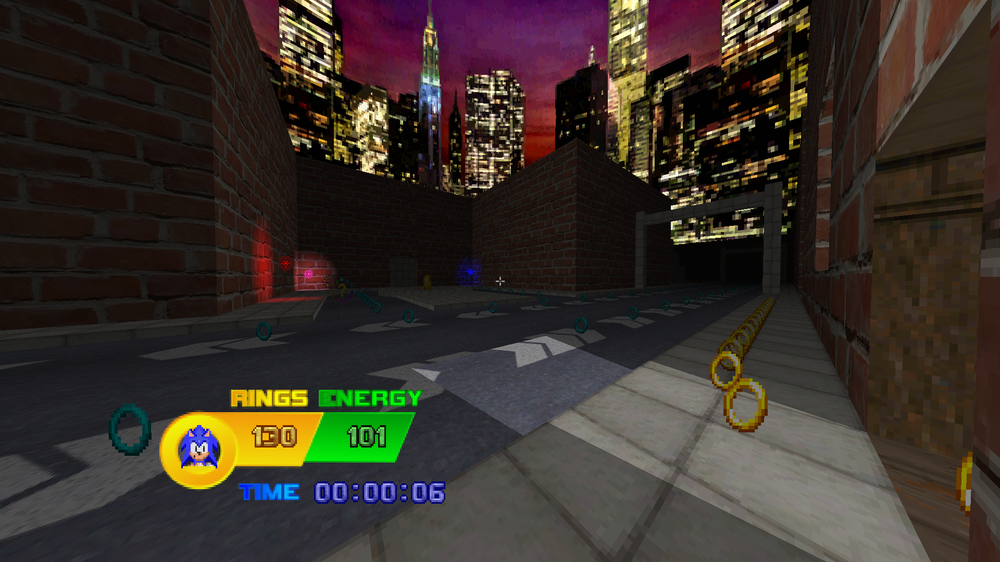v1.0 introduced a hub level in the form of Station Square, which contained a small platform section, as well as portals to Green Hill and four character-specific tutorials.
That's right – v1.0 brought back the tutorial!
Also, Classic Sonic! He represents the pre-Chaos era Sonic and plays just like he did.
We could talk all day about what makes v1.0 awesome and much more of a departure from the pre-Chaos era. But there's a lot to cover and I don't really feel like writing about all of it. I've got to talk about v1.3 and v1.4 as well...
v1.1 came out on 2021-11-22 and gave Classic Sonic the Spin Dash, but that's about it.
v1.2 came out on 2021-12-21 and mostly focused on minor improvements and refinements, so I won't say anything else about it.
Have a Doox.
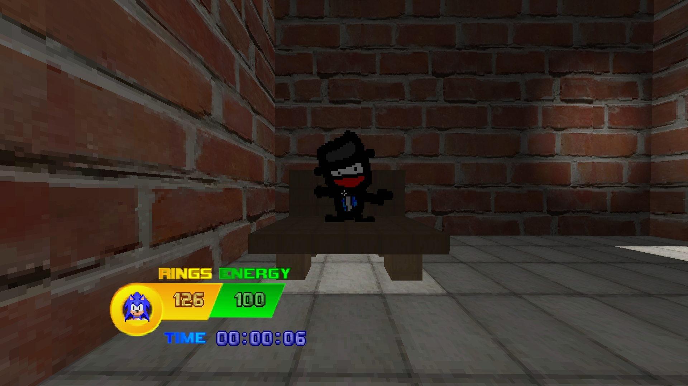v1.3 (2022-04-15 – 2022-05-15)
v1.3 was much more of an update-sized update rather than a minor update like v1.1 and v1.2 were.
It included a shiny new title screen, shiny new Green Hill, and shiny new Station Square!
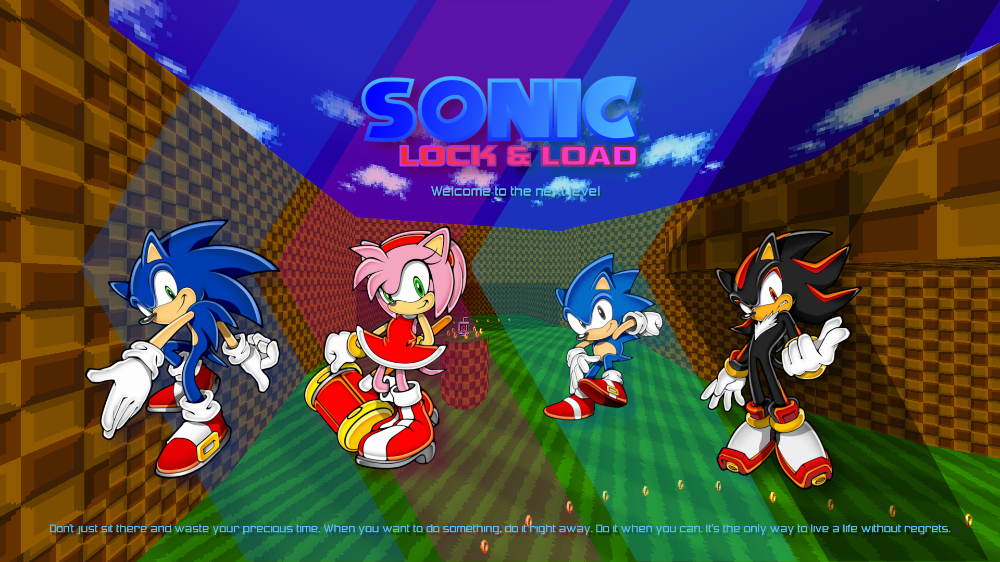v1.3's Station Square expanded on v1.0's, brightening everything up and adding more platforming elements.
It would be the template that succeeding iterations of Station Square would be based on.
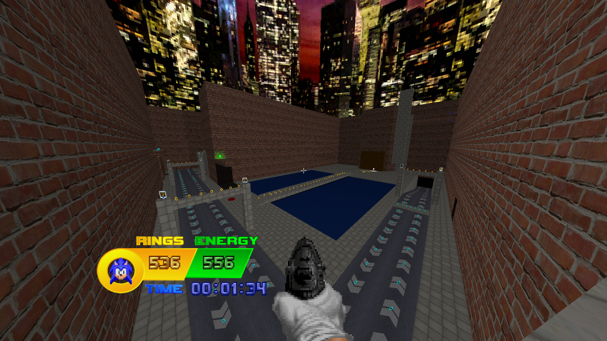v1.3 also introduced the double jump - a useful feature for Sonic and Amy that would later become a fundamental mechanic for all characters.
The double jump itself was useful for traversing the levels (or rather, level), but it wasn't a requirement for Sonic.
Amy, however, was slower by default, so she needed the double jump for platforming, especially in the more involved Green Hill.
Classic Sonic and Shadow still went double jump-less for the time being, though.
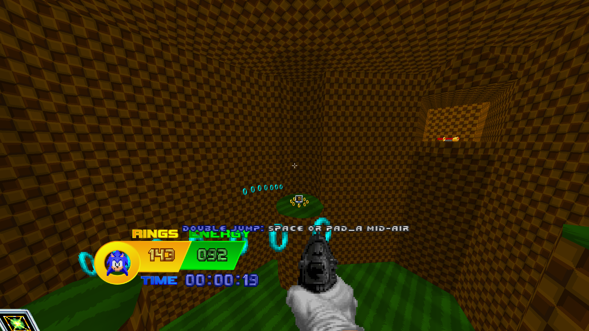Under the hood, v1.3 wasn't much different than v1.2 before it. It focused mainly on surface-level polish and level design.
While it of course came with your usual bug fixes and patches, it was pretty much just v1.0, but better.
v1.3.1 mostly involved bug fixes, including minor skill rebalancing.
v1.3.2 focused on better controller input and equipping Sonic with the Wall Jump (which, by the way, was overpowered as hell).
v1.3.3 is when I started listening to feedback on what I received on Sonic: Lock & Load at the time. It included some buffs, some nerfs, some rebalancing, and of course, bug fixes.
Overall, the v1.3 line was pretty solid, but it pales in comparison to what comes next.
v1.4 "Horizons" (2023-11-XX)
Oh, boy.
Horizons wasn't supposed to be this big an update. It was just supposed to add some features here and there. It was pretty much the second Chaos Update with how much content I ended up adding by accident.
First of all, the update underwent development hell for the duration of SAGE 2022 and a little bit after that. If you want, you can read about all that here.
Horizons didn't just focus on improving the gameplay. It didn't just focus on under-the-hood changes. It didn't just focus on adding new levels.
No, Horizons focused on improving FRICKING EVERYTHING.
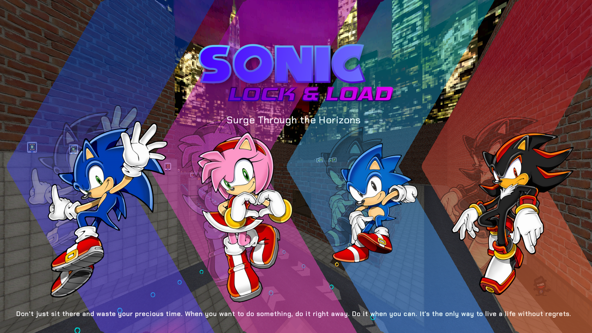You see that?? You see that title screen? Look at that title screen and compare it to v1.3's!
Fundamentally, it's the same - the characters are in the same position and it shares the same layout.
But it's just so much BETTER!! LOOK AT IT!!
The title screen update itself is indicative of how far Horizons has taken the game.
v1.4 "Horizons" makes Sonic: Lock & Load more than just a simple DOOM mod - Horizons turns the mod into a game of its own right.
I could talk forever about the changes Horizons makes, or you can just view the changelog.
I hope you enjoy Sonic: Lock & Load v1.4 "Horizons" when it drops in November!
I've been working on it for really, really long, and I would have been working on it for even longer if I wasn't driven by SAGE 2023. (which I missed, by the way, but whatever)
⟨ Back to main page